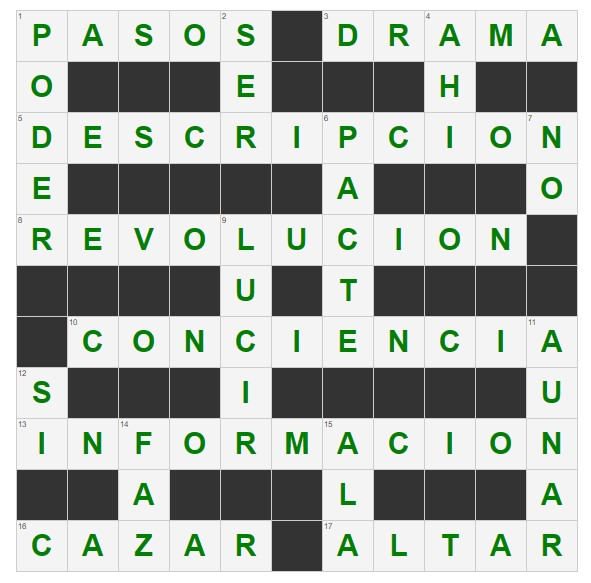

<!DOCTYPE html>
<!--[if lt IE 7]> <html class="no-js ie6 oldie" lang="en"> <![endif]-->
<!--[if IE 7]>    <html class="no-js ie7 oldie" lang="en"> <![endif]-->
<!--[if IE 8]>    <html class="no-js ie8 oldie" lang="en"> <![endif]-->
<!--[if gt IE 8]><!-->
<html class="no-js" lang="en">
  <!--<![endif]-->
  <head>
    <meta charset="utf-8" />
    <meta http-equiv="X-UA-Compatible" content="IE=edge,chrome=1" />
    <title>Qurossword - A javascript crossword puzzle plugin</title>
    <meta name="viewport" content="width=device-width,initial-scale=1" />
    <script src="https://ajax.googleapis.com/ajax/libs/jquery/1.6.2/jquery.min.js"></script>
    <script src="js/jquery.crossword.js"></script>
    <script src="js/script.js"></script>

    <style type="text/css" media="screen">
  body {
  font: 62.5%/1.3em Helvetica, sans-serif;
  width: 90.3%;
  margin: 10px auto;
}

table {
  border-collapse: collapse;
  border-spacing: 0;
  max-width: 100%;
}

table tr {
  width: 100%;
}

table td {
  width: 5em;
  height: 5em;
  border: 1px solid #cdcdcd;
  padding: 0;
  margin: 0;
  background-color: #333;
  position: relative;
}

td input {
  width: 100%;
  height: 100%;
  padding: 0em;
  border: none;
  text-align: center;
  font-size: 3em;
  color: #666;
  background-color: #f4f4f4;
}

td input:focus {
  background-color: #fff;
}

td span {
  color: #444;
  font-size: 0.8em;
  position: absolute;
  top: -1px;
  left: 1px;
}

input.done {
  font-weight: bold;
  color: green;
}

.active,
.clues-active {
  background-color: #eee;
}

.clue-done {
  color: #999;
  text-decoration: line-through;
}

/* Estilos para la disposición del crucigrama */
#puzzle-wrapper {
  float: left;
  width: 54%;
  margin-right: 3%;
}

#puzzle-clues {
  float: left;
  width: 40%;
}

#puzzle-clues li {
  font-size: 1.6em;
  margin: 0.3em;
  line-height: 1.6em;
}

#solution-btn {
  margin-top: 10px;
  padding: 10px 20px;
  font-size: 16px;
  font-weight: 600;
  cursor: pointer;
  background-color: #1482ad;
  color: #ddd;
  border-radius: 10px;
}
#solution-container{
    text-align: center;
  }

/* Media query para pantallas pequeñas */
@media (max-width: 768px) {
  #puzzle-wrapper {
    width: 100%;
    margin-right: 0;
  }

  #puzzle-clues {
    width: 100%;
    float: none;
    margin-top: 20px;
  }
  #solution-container{
    display: flex;
    justify-content: center;
    align-items: center;
    flex-direction: column;
  }
  /* Ajuste del botón de solución */
  #solution-btn {
    width: 100%;
    margin-top: 15px;
  }
  #solution-img{
    width: 330px;
  }
}
    </style>
  </head>

  <body>
    <div id="puzzle-wrapper"><!-- crossword puzzle appended here --></div>
   <!--<div id="solution-container">
      <button id="solution-btn">VER SOLUCIÓN</button>
      <div id="img-container">
        
      </div>
    </div> 
    <script src="js/script2.js"></script>-->
  </body>
</html>
